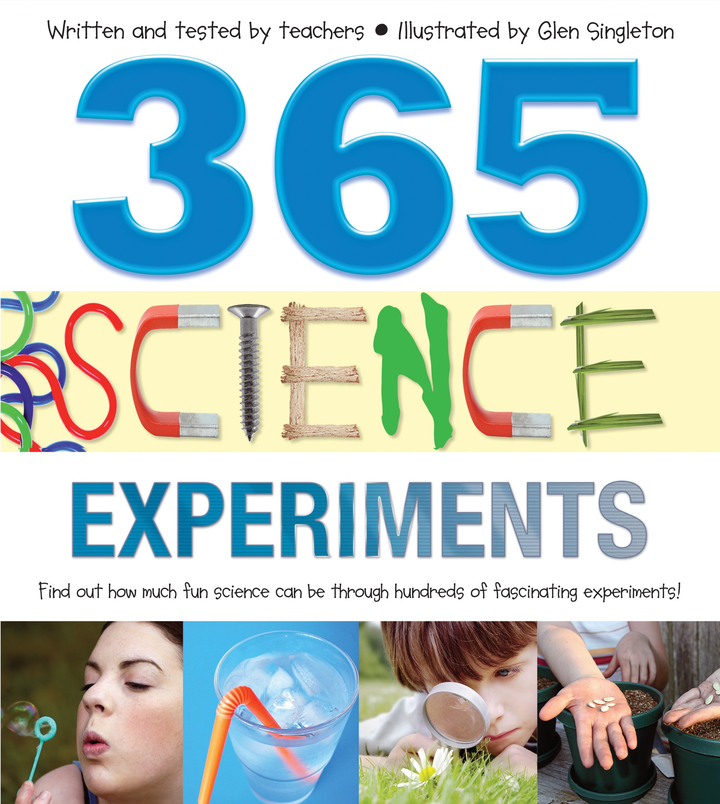
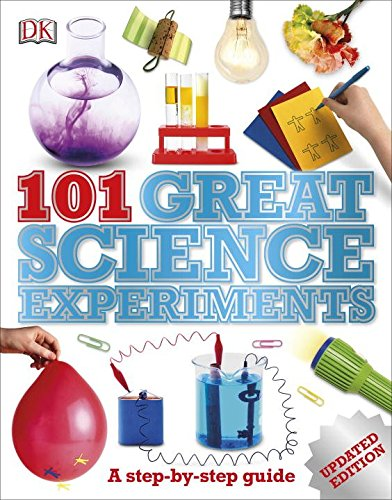
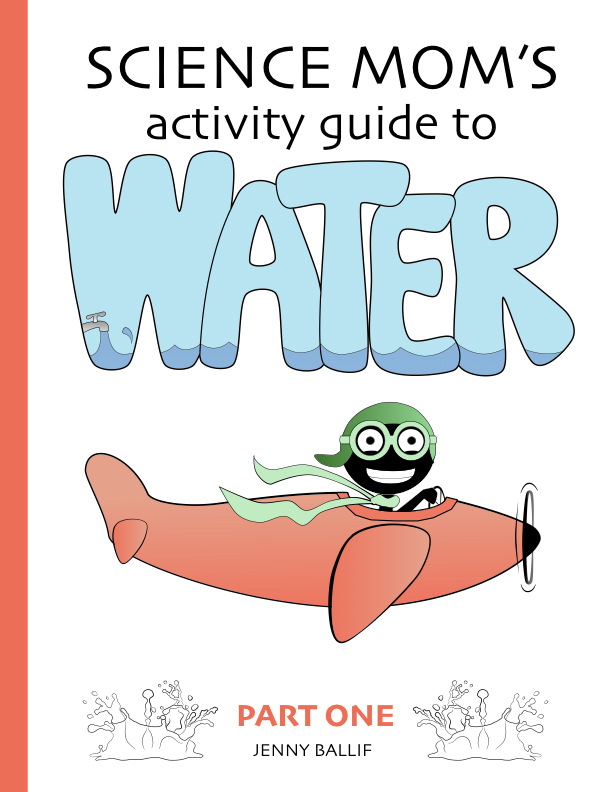
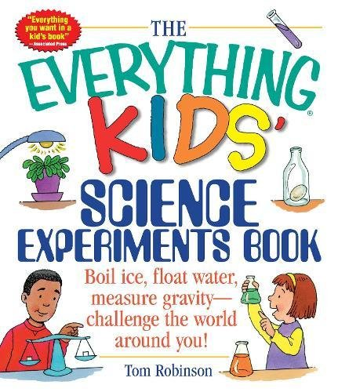
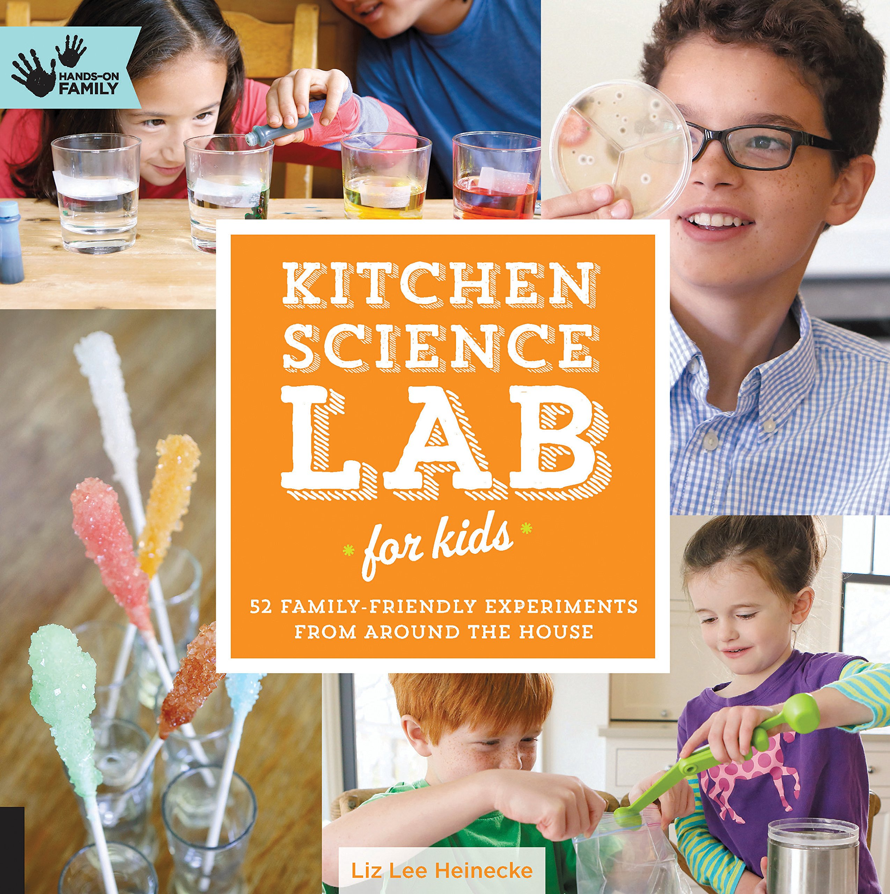
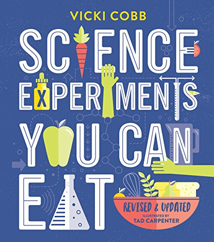
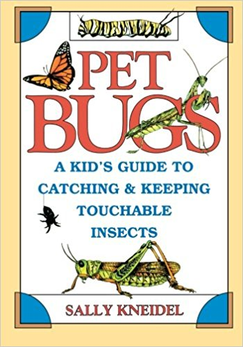

Whenever I present at schools, someone will ask me where I get ideas for my science experiments. I’ve found several while researching topics on the internet, but while there’s a plethora of resources online, a lot of my inspiration comes from books.
I’ve gathered a decent collection of science activity books over the years, and when someone at a recent conference asked for recommendations, I told them I’d put together a list for them. Here it is!

365 Science Experiments by Glen Singleton.
This one is definitely the book that my kids pick up and read the most. Perhaps because of the large size and the nice spiral binding? The format is appealing with simple explanations and fun “Did you know?” boxes that accompany each experiment description. It doesn’t appear to be in print anymore, which means you might be looking at purchasing it used if you’d like to add it to your collection.

101 Great Science Experiments by Neil Ardley.
If I were to be forced to pick one book to recommend (So hard! Don’t make me do it!) then it might be this one. Many of my classic favorite experiments are here, it has detailed instructions with full-color photos, and it covers a wide variety of subjects. The photos are very nicely done, and their step-by-step layout makes it easy to see at a glance what materials are involved in each experiment.

Science Mom Guides by Jenny Ballif
I almost left these off the list, because I wrote them. But honestly, I think they’re rather fantastic activity books. So if you haven’t checked them out, then you should! With between 4 and 6 science activities per book, these aren’t a one-stop shop for science experiment ideas, but they offer a more in-depth approach and the activities and writing portions invite you to really explore each concept thoroughly.

The Everything Kids’ Science Experiment Book by Tom Robinson.
The Everything Kid’s Science Experiment Book includes instructions for science activities as well as questions and space to record your observations and answers. With a “questions for the scientist” section after each lesson, this book takes the potential learning a level deeper with its workbook-like layout. I’ve referenced this book several times when preparing lessons, but my kids haven’t spent much time with it–they prefer other books in the collection. Most likely because The Everything Kid’s book lacks pictures and has very few drawings. The text-heavy layout does makes it more laborious to read.

Kitchen Science Lab for kids by Liz Lee Hienecke
52 fun experiments in this book on a wide variety of subjects. With color photos throughout the book, great little “science behind the fun” sections, and thoughtful questions to encourage critical thinking and reasoning in the “creative enrichment” sections, this is a great book. If I were forced to pick one book to recommend (So hard! Don’t make me do it!) It might be this one.

Science Experiments You Can Eat by Vicki Cobb
A fun collection of edible experiments and an introduction into the chemistry of cooking all in one. From the carageenan stabilization in chocolate putdding to emulsions in salad dressings, these experiments will teach you a lot about the science behind cooking. More advanced vocabulary is often used in this book than in the previous books mentioned, but the occasional cartoons and fun text keep it accessable. No color photos and scant illustrations, so not quite as inviting as Kitchen Science or 101 Great Science Experiments, but still a great resource. And for the young scientist who really enjoys cooking? It’s perfect.

Pet Bugs and More Pet Bugs by Sally Kneidel
A fabulous set of books with detailed descriptions of a multitude of insects, where to find them, how to catch and keep them as pets. At first glance, you might think this book doesn’t belong with science experiments, but observing insects is great scientific study! While the book doesn’t set out detailed experiments, per say, there’s a lot to be learned about the science of observation in this set of books. They’re a marvelous introduction, in my opinion, not just to entymology, but to the life sciences in general.
Alright, those seven books are my favorite-favorites, but that doesn’t mean they need to be your favorites!
I have several newer books on my “hope to buy sometime soon” list, and as those come in I’ll update this compliation here. And now, a few quick notes about some of the other books in my collection:
Theodor Gray’s Completely Mad Science
Experiments you should do at home but probably shouldn’t. This isn’t a how-to book at all. It’s a beautifully illustrated and fun tour of a fantastic series of experiments, almost all of which are too dangerous (or expensive) to do at home. Both entertaining and informative, it’s a great read.
Rosie Revere’s Big Project Book for Bold Engineers by Andrea Beaty
Geared for a younger scientist, perhaps age 5 to 8, this book is a fun compliation of simple engineering activities. There are pictures to be drawn, word puzzles to be solved, and more.
STEAM KIDS
Put together by a group of bloggers, this compilation of 50 activities has fun pictures and a lot of art projects in addition to science activities.
Science in Seconds for Kids by Jean Potter
A great reference that’s easy to read.
The Book of Totally Irresponsible Science by Sean Connolly
Written in a fun and sometimes sarcastic tone, the book has entertaining illustrations and side notes. If you have a kid who would be a good match for this sense of humor, this might be just the book to hook them on science.
The Book of Massively Epic Engineering Disasters by Sean Connolly
Ditto to the above note. Entertaining tone, great anecdotes and cartoon illustrations sprinkled throughout. A fun read and full of good projects.
I hope these books give you inspiration for launching your own science explorations. If you have a favorite that’s not included here, let me know! I’m always looking to expand my own collection.